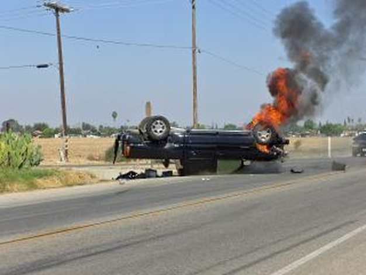

О невиновности при ДТП

Вопрос: виновен ли водитель, который...
Правовые аспекты ДТП
К сожалению, методика расследования уголовных дел данной категории, очень далека от совершенства, поэтому жалобы потерпевших, водителей на превышение власти, злоупотребления, отсутствие профессионализма или просто на не порядочность со стороны работников правоохранительных органов, иногда не беспочвенны.
Любой опытный адвокат вам скажет, что какие-либо сомнения по гражданскому, административному или уголовному делу всегда можно обратить, как в пользу, так и во вред любой из спорящих сторон. Так любой пробел в обстоятельствах ДТП, поверьте мне, может быть позже «восполнен» показаниями сомнительных свидетелей, очевидцев, или далёкими от истины показаниями участников ДТП (водителей транспортных средств, велосипедистов, пешеходов). К счастью, данные показания при проверке их на техническую состоятельность, часто не выдерживают никакой критики, то есть являются откровенной ложью. Показания любого участника, очевидца или свидетеля ДТП опытный адвокат по ДТП может проверить на техническую состоятельность самостоятельно при помощи математических расчетов, конкретизации, пространственной их детализации и логических умозаключений, либо прибегнув к помощи специалистов соответствующей отрасли специальных технических познаний.
Многое будет зависеть от качества осмотра места происшествия, качества сбора первичного материала, полноты фиксации следов дорожно-транспортного происшествия. Сюда относятся правильность составления схемы места происшествия, профессиональное фотографирование места ДТП, установление всех очевидцев ДТП, их качественный первоначальный опрос. Иными словами, истинная картина происшедшего воссоздается, как мозаика, из всех ранее указанных составляющих.
К огромному сожалению, любой из нас может стать участником ДТП. Всё это может произойти с любым, с каждым из нас, с нашими близкими.
На вопрос виновен водитель или не виновен, сразу не может ответить даже опытный специалист по ДТП, присутствовавший во время осмотра места происшествия, изучивший обстоятельства ДТП с различных сторон, не зависимо от продолжительности и интенсивности опыта работы в данной сфере правоприменительной деятельности. Для того чтобы дать единственно верный, объективный ответ на этот вопрос необходимо полно, объективно и всесторонне исследовать все исходные данные, уточнив и проверив все показания и обстоятельства при проведении воспроизведения обстановки и обстоятельств события на месте происшествия. Назначить и провести автотехническую, а при необходимости и комплексную автотрассологическую и автотехническую экспертизы. По заключению этой экспертизы, при соблюдении вышеуказанных требований к расследованию уголовного дела либо рассмотрения гражданского дела в суде, можно дать объективный окончательный ответ, на вопрос кто виноват, а кто нет. Меня иногда откровенно удивляет позиция органов массовой информации, которые, выслушав «авторитетное мнение» какого-то дилетанта, спешат объявить во всеуслышанье всему региону, что водитель не виноват. Им не понять, что всё зависит от хода расследования уголовного дела. И очень часто бывает по делам подобной категории, если дело расследовалось предвзято, что объективно виновный избегает уголовной ответственности, а невиновный оказывается на скамье подсудимых только потому, что у него нет соответствующей суммы, чтобы дать взятку или он не посчитал нужным нанять грамотного адвоката, специализирующегося по ДТП.
Огромную помощь вам в этом случае может оказать опытный адвокат, специализирующийся по этой категории дел. Часто десять сантиметров на первоначальной схеме, составляемой во время осмотра места дорожно-транспортного происшествия, или первоначальные показания играют огромную роль в определении степени вины водителя.
При столкновении двух транспортных средств может быть установлена и обоюдная форма вины обоих водителей.
Участие с первых минут после ДТП в деле с любой стороны опытного адвоката, специализирующегося по ДТП, может кардинально повлиять на качество, полноту, объективность и быстроту расследования данного уголовного дела, оказать положительное либо негативное влияние на возмещение виновной стороной материального и морального ущерба.
Затрагивая данную тему, мы анализируем ситуацию с точки зрения действующего на сегодняшнее время отечественного законодательства, поэтому нам, как адвокатам, анализировать ситуацию с моральной точки зрения нет необходимости.
То, что вы прочтёте далее, может произвести на вас впечатление, даже если вы не водитель. Поэтому обязательно обратите внимание на следующее:
- Наличие алкоголя в крови у кого-либо из участников ДТП может и не иметь никакой причинной связи с ДТП, а поэтому может и не иметь значения. Иными словами это может ни как не влиять на степень вашей вины. За управление транспортным средством в состоянии алкогольного опьянения предусмотрена иная ответственность, и это ни как не находится в прямой причинной связи с дорожно-транспортным происшествием и наступившими последствиями.
- Тоже самое мы можем сказать и по поводу управления чужим транспортным средством, при отсутствии права на управления транспортными средствами, и превышением максимально разрешённой скорости. Обращаем ваше внимание, что за все эти проступки предусмотрена иная ответственность, и это никак не находится в прямой причинной связи с дорожно-транспортным происшествием и наступившими последствиями.
- Ни в коем случае не следует скрываться с места происшествия. Если будет установлено, что вы располагали технической возможностью остановить транспортное средство, применив экстренное торможение, с момента обнаружения, до места контакта, например, с пешеходом, и ваши действия находились в прямой причиной связи с ДТП, и наступившими последствиями, то есть будет установлена ваша вина, то вас могут привлечь дополнительно ещё к уголовной ответственности по ст. 135 УК Украины за оставление пострадавшего в опасности.
Если, например, выяснится, что с момента объективной возможности обнаружения пешехода на проезжей части вы не имели технической возможности остановить транспортное средство, применив экстренное торможение, до места наезда на пешехода, то уголовное дело будет прекращено согласно УПК Украины в виду отсутствия в ваших действиях состава преступления, предусмотренного ч. 2 ст. 286 УК Украины.
Резюмируя вышеизложенное, могу уточнить и дополнить, что при своевременном, профессиональном, грамотном и объективном подходе при расследовании уголовных дел подобной категории степень вашей вины будет равняться нулю, то есть вы будете не виновны. А своевременная помощь адвоката этому поспособствует.